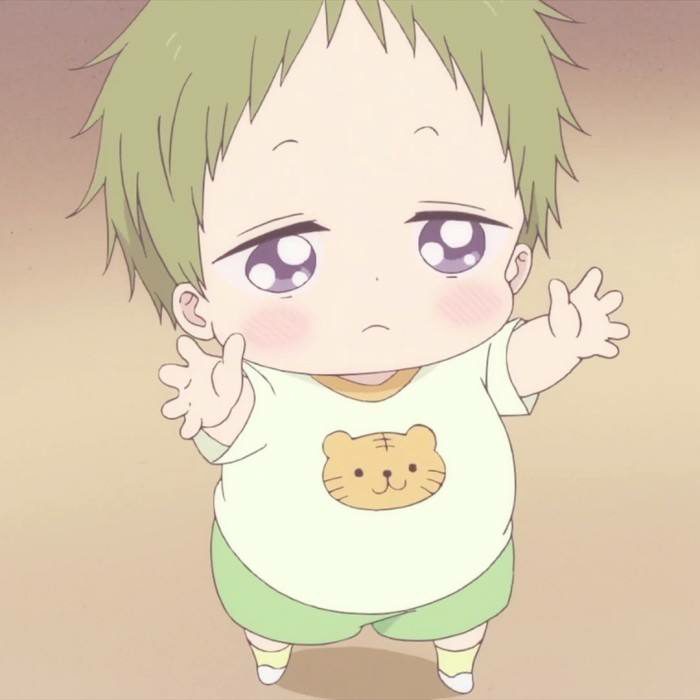

ife.baidu.com
2016.03
About
Technologe
About technologe about technologe about technologe
700
3.2
css
csscssscssscssscsss
鹿岛虎太郎是《学园奶爸》人物之一，男主角鹿岛龙一的弟弟。很喜欢窝在龙一怀里，红起脸来非常可爱，。鹿岛虎太郎是《学园奶爸》人物之一，男主角鹿岛龙一的弟弟。很喜欢窝在龙一怀里，红起脸来非常可爱，因为父母在空难中遇难而和哥哥鹿岛龙一一同被在同一场空难中失去儿子和儿媳的森之宫学园的理事长森之宫羊子收养。
作为小孩子的它，又是和哥哥很相似，隐藏心思不希望给别人带来麻烦。更多时候还是如他的年龄一般的直率，第一次见到理事长就叫对方恶魔婆婆，喜欢指着婆婆的头说毛茸茸。作为小孩子的它，又是和哥哥很相似，隐藏心思不希望给别人带来麻烦。
虽然感觉很成熟，但是自己喜欢的人（龙一）和别的小朋友在一起也会吃醋。很喜欢窝在龙一怀里，红起脸来非常可爱。
中文名----------鹿岛虎太郎
性 别----------男
年 龄----------2
THETECHNOLOGE OF FRONT
前端技术领域
前端前端前端前端前端前端前端前端前端前端前端前端前端前端前端前端前端前端前端前端前端前端前端前端前端前端前端前端前端前端前端前端前端前端前端前端前端前端前端前端前端前端前端前端前端前端前端前端前端前端前端前端前端前端前端前端前端前端前端前端前端前端前端前端前端前端前端前端前端前端前端前端前端前端前端前端前端前端前端前端前端前端前端前端前端前端前端前端前端前端前端前端前端前端前端前端前端前端前端前端前端前端前端前端前端前端前端前端前端前端前端前端前端前端前端前端前端前端前端前端前端前端前端
前端前端前端前端前端前端前端前端前前端前端前端前端前端前端前端前端前端前前端前端前端前端前端前端前端前端前端前端前端前端前端前端前端前端前端前端前端前端前端前端前端前端前端前端前端前端前端前端前端前端前端前端前端前端前端前端前端前端前端前端前端前端前端前端前端前端前端前端前端前端前端前端前端前端前端前端前端前端前端前端前端前端前端前端前端前端前端前端前端前端前端前端前端前端前端前端前端前端前端前端前端前端前端前端前端前端前端前端前端前端前端前端前端前端前端前端前端前端前端前端前端前端前端前端前端前端前端前端前端前端前端前端前端前端前端
前端前端前端前端前端前端前端前端前端前端前端前端前端前端前端前端前端前端前端前端前端前端前端前端前前端前端前端前端前端前端前端前端前端前端前端前端前端前端前端前端前端前端前端前端前端前端前端前端前
前端技术前端技术前端技术
前端技术前端技术前端技术...............
前端技术前端技术前端技术...............
前端技术前端技术前端技术 ...............
ONE TWO
THREE FOUR FIVE
hello world hello world
hello world
哈哈哈哈哈哈哈哈哈哈哈哈哈哈哈哈哈哈哈哈哈哈哈哈哈哈哈哈哈哈哈哈哈哈哈哈哈哈哈哈哈哈哈哈哈哈哈哈哈哈哈哈哈哈哈哈哈哈哈哈哈哈哈哈哈哈哈
ife.baidu.com